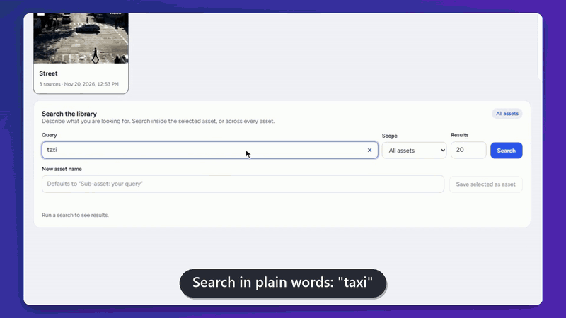

BotFlow
An agentic platform: describe the dataset you need in a chat, and a local AI agent turns raw photos and video into labeled, reviewed training data.

- Search Embeddings find matching frames from a plain-English query like “taxi”.
- Plan A local LLM agent asks for missing details and writes the labeling prompt.
- Calibrate The model judges sample results to pick a confidence threshold before running at scale.
- Review Approve with the keyboard, or fix a result in one click.
- Export Ready-to-train COCO or YOLO datasets.
FastAPI modular monolith with durable background jobs and a GPU manager that fits two foundation models on a 6 GB laptop GPU. 360+ pytest and Playwright tests in CI.
Python, FastAPI, Qwen3-VL (Ollama), SAM 3, SigLIP 2, PyTorch, SQLite, Playwright
agentic-cv-platform on GitHub